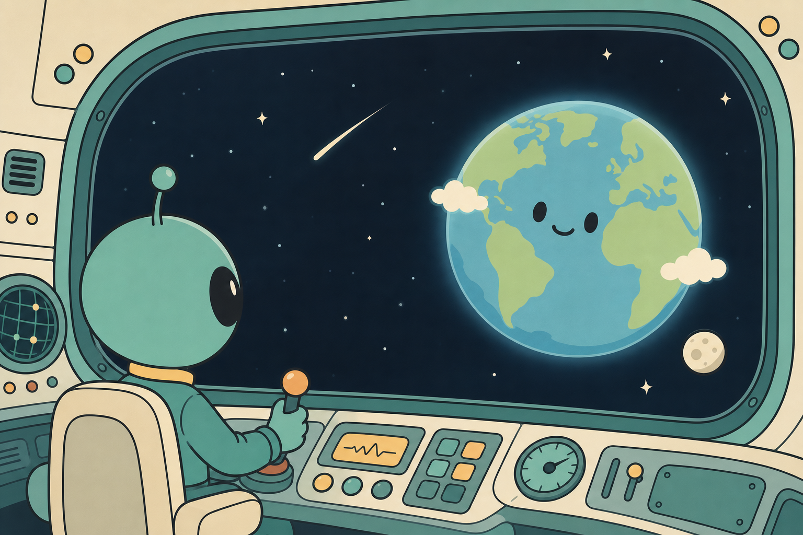

Reading comes first
Stories stay central. Translation, review, and guidance stay light.
A language app for the wonderfully strange.
Alien Learns is a reading-first language experience. Tap into short passages, discover new words in place, and build understanding one sentence at a time.
Stories stay central. Translation, review, and guidance stay light.
Words arrive inside scenes and sentences instead of isolated lists.
The app is being built around private, on-device language help.
How it works
The experience is meant to feel closer to a small illustrated reader than a noisy lesson dashboard.
María toma un café en la plaza. Hace sol y ella está feliz.
Word
café
Meaning
coffee
Why this shape
Small passages make it easy to return often without friction.
Tap a word and get a quick gloss without losing the flow.
Useful words come back over time instead of becoming homework.

Beta
I’m sharing early builds with a small group of testers. If you enjoy language learning, reading, or gently odd software, I’d like to hear what works and what does not.
Ask for beta access